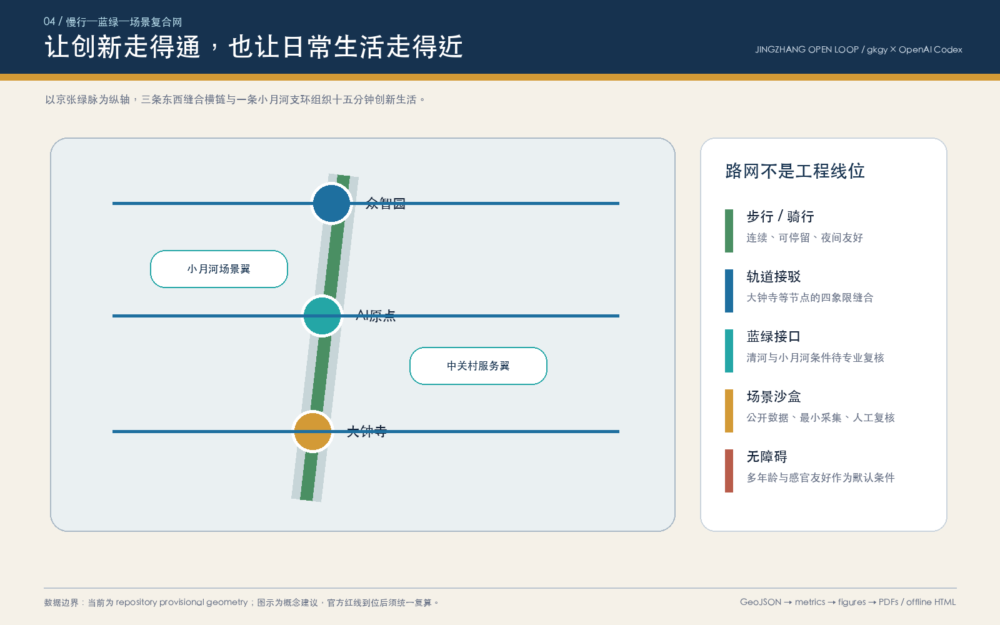

众智园 · 开放评测港
全栈自主技术联合评测、机器人公共空间沙盒、低碳算力协同与清河创新花园接口。
Jingzhang Open Loop：以京张遗址公园为公共记忆与慢行主脉，以众智园、AI 原点社区、大钟寺为三处差异化创新锚点，以中关村科技服务翼与小月河场景赋能翼形成持续交换人才、算力、数据、场景和公共价值的开放回路。
当前使用 repository provisional geometry。 本页面用于开源征集 intake、设计讨论与内容评审，并概述用地分区；它不是官方红线、法定控规、工程线位或政府实施承诺。官方 polygon 到位后，全部设计图层与指标须统一复算。
三层范围：43.6 km² 统筹研究用于产业与未来城市策略；约 11.4 km² 临时总体设计边界用于生成与复核；三处重点区用于差异化概念详设。边界状态始终保留 provisional 标签。
前三项来自 GeoJSON 与 EPSG:4548 复算，但比例是设计空间指标，不是已批控规。容积率、建筑高度、建筑密度、退线保持 unknown。
全栈自主技术联合评测、机器人公共空间沙盒、低碳算力协同与清河创新花园接口。
高校成果转译、开源发布、人才生活与贡献记忆，形成近校型创新共同体。
智能原生消费与商务、国际路演、站城四象限步行缝合及公共体验。
五条概念性慢行联系组织南北主径、三条东西横链和小月河支环；三段蓝绿接口、四处公共地标与八个概念建筑组件形成“走得到、停得下、可试验、能复核”的创新生活网络。所有线位、建筑基底与更新策略均待道路红线、权属、现状建筑、文保、市政和消防条件确认。

12 张场景卡中，SC-01 至 SC-03 是产业测试验证场景。每张卡均要求公开/授权数据、最小化采集、人工复核、退出机制和责任主体确认。
众智园｜公开/授权数据｜人工可复核
众智园｜公开/授权数据｜人工可复核
众智园｜公开/授权数据｜人工可复核
AI原点｜公开/授权数据｜人工可复核
AI原点｜公开/授权数据｜人工可复核
AI原点｜公开/授权数据｜人工可复核
大钟寺｜公开/授权数据｜人工可复核
大钟寺｜公开/授权数据｜人工可复核
开放回路｜公开/授权数据｜人工可复核
开放回路｜公开/授权数据｜人工可复核
开放回路｜公开/授权数据｜人工可复核
开放回路｜公开/授权数据｜人工可复核
compliance_matrix.json 覆盖公告 1.3、1.4、1.5 与 agent.1—agent.6；standard_matrix.json 和 design_depth_matrix.json 提供标准与专业深度证据。
来源见 sources.json；缺口见 assumptions.json。离线页面不加载 CDN、地图瓦片、脚本、字体、iframe、表单、API 或跟踪代码。
geometry/*.geojson → metrics.json → figures/PDF/HTML → self_check.json